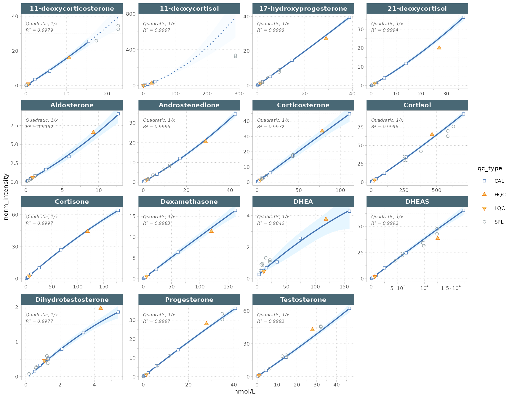

Quantification with external calibration
Source:vignettes/articles/tutorial-06-external-calibration.Rmd
tutorial-06-external-calibration.RmdExternal calibration quantifies each analyte from a calibration curve measured alongside the samples, as used in clinical chemistry, toxicology and environmental analysis. This tutorial fits one curve per analyte from a dilution series of calibrators, quantifies the samples, and checks the result against QC samples with assigned target concentrations. The example is a 15-analyte serum steroid panel measured by LC-MRM-MS, with calibrants (Cal A–F), low and high QCs (LQC, HQC), and external quality-assessment samples in place of study samples.
The target concentrations for the calibrators and QCs live in the
QCconcentrations metadata, which requires
sample_id in the analysis metadata and
analyte_id in the feature metadata.
The full, reproducible report for this dataset — including drift-range flags, exports and the underlying data — is published as Dataset 4 in the MRMhub-workflows supplement.
1. Import data and metadata
We load the INTEGRATOR peak areas into a fresh
MRMhubExperiment, then attach the metadata workbook that
defines the analytes, their internal standards, the sample annotations,
and the calibration and target concentrations.
library(mrmhub)
mexp <- MRMhubExperiment(title = "Steroid Assay")
mexp <- import_data_mrmhub(
mexp,
path = "datasets/Dataset4_MRMhub-INTEGRATOR_ASSAY.csv",
import_metadata = TRUE)✔ Imported 20 analyses with 64 features.ℹ feature_area selected as default feature intensity. Modify with `set_intensity_var()`.✔ Analysis metadata associated with 20 analyses.✔ Feature metadata associated with 64 features.mexp <- import_metadata_msorganiser(
mexp,
path = "datasets/Dataset4_Metadata.xlsx",
excl_unmatched_analyses = TRUE,
ignore_warnings = TRUE)
Found no errors, 2 warnings, and 2 notes in the metadata.
----------------------------------------------------------------
Type Table Column Issue Count
1 W* Analyses analysis_id Analyses not in analysis data 12
2 W* Features feature_id Feature(s) without metadata 34
3 N Analyses sample_id Not defined for all analyses 16
4 N Features analyte_id Not defined for all features 15
----------------------------------------------------------------
E = Error, W = Warning, W* = Suppressed Warning, N = Note
----------------------------------------------------------------✔ Analysis metadata associated with 20 analyses.✔ Feature metadata associated with 30 features.✔ Internal Standard metadata associated with 15 ISTDs.✔ QC concentration metadata associated with 13 samples and 15 analytes2. Fit the calibration curves
normalize_by_istd() divides each analyte’s peak area by
that of its internal standard, writing the ratio to
feature_norm_intensity.
calc_calibration_results() then fits one curve per analyte
from the calibrator levels — here a quadratic model with
1/x weighting for all analytes. The model and weighting can
also be set per analyte in the feature metadata.
mexp <- normalize_by_istd(mexp)✔ 15 features normalized with 15 ISTDs in 20 analyses.
mexp <- calc_calibration_results(
mexp,
fit_overwrite = TRUE,
fit_model = "quadratic",
fit_weighting = "1/x")✔ Calibration curve fits calculated for all 15 quantifier features. Average r²: 0.9978.
plot_calibrationcurves(
mexp,
fit_overwrite = TRUE,
fit_model = "quadratic",
fit_weighting = "1/x",
include_istd = FALSE,
include_qualifier = FALSE,
rows_page = 4, cols_page = 4,
show_progress = FALSE)
Figure 1. Quadratic, 1/x-weighted calibration curves for the 15 steroid analytes. Curves are solid within the calibrator range and dotted where extrapolated.
get_calibration_metrics() summarises each fit: the R²
for linearity and the limits of detection and quantification
(lod, loq), in the calibrated concentration
unit.
get_calibration_metrics(
mexp,
include_qualifier = FALSE, summary_table = TRUE)
# A tibble: 15 × 6
analyte fit_model fit_weighting r2 lod loq
<chr> <chr> <chr> <dbl> <dbl> <dbl>
1 11-deoxycorticosterone quadratic 1/x 0.998 0.457 1.38
2 11-deoxycortisol quadratic 1/x 1.000 0.279 0.844
3 17-hydroxyprogesterone quadratic 1/x 1.000 0.197 0.596
4 21-deoxycortisol quadratic 1/x 0.999 0.427 1.29
5 Aldosterone quadratic 1/x 0.996 0.639 1.94
6 Androstenedione quadratic 1/x 0.999 0.445 1.35
7 Corticosterone quadratic 1/x 0.997 1.25 3.79
8 Cortisol quadratic 1/x 1.000 1.22 3.71
9 Cortisone quadratic 1/x 1.000 0.463 1.4
10 DHEA quadratic 1/x 0.985 3.03 9.18
11 DHEAS quadratic 1/x 0.999 8.29 25.1
12 Dexamethasone quadratic 1/x 0.998 1.19 3.6
13 Dihydrotestosterone quadratic 1/x 0.998 0.178 0.54
14 Progesterone quadratic 1/x 1.000 0.251 0.76
15 Testosterone quadratic 1/x 0.999 0.458 1.39 3. Quantify the samples
Once the curves are satisfactory,
quantify_by_calibration() inverts each fitted curve to
convert the normalized intensities into absolute concentrations, written
to feature_conc. Using
ignore_failed_calibration = TRUE skips any analyte whose
curve failed to fit rather than aborting the whole run.
mexp <- quantify_by_calibration(
mexp,
fit_overwrite = FALSE,
include_qualifier = FALSE,
ignore_failed_calibration = TRUE,
fit_model = "quadratic",
fit_weighting = "1/x")✔ Calibration curve fits calculated for all 15 quantifier features. Average r²: 0.9978.ℹ 77 concentration values fall outside the calibrated range (retained, flagged in feature_conc_out_of_range).✔ Concentrations calculated for 15 features in 20 analyses.✔ Concentrations are given in nmol/L.4. Check QC bias and variability
The final check compares the measured QC concentrations against their
known targets. get_qc_bias_variability() reports, per
analyte and QC level, the mean measured concentration, the
bias (percent deviation from target — accuracy) and the
intra-batch %CV (precision).
get_qc_bias_variability(
mexp,
qc_types = c("LQC", "HQC"), summary_table = TRUE)
# A tibble: 30 × 9
feature_id sample_id qc_type n conc_target conc_mean cv_intra bias
<chr> <chr> <chr> <int> <dbl> <dbl> <dbl> <dbl>
1 11-deoxycortic… LQC LQC 1 0.593 0.672 NA 13.4
2 11-deoxycortic… HQC HQC 1 10.7 10.2 NA -4.68
3 11-deoxycortis… LQC LQC 1 1.38 1.45 NA 5.3
4 11-deoxycortis… HQC HQC 1 26.5 23.5 NA -11.3
5 17-hydroxyprog… LQC LQC 1 1.42 1.51 NA 6.57
6 17-hydroxyprog… HQC HQC 1 29 27.1 NA -6.61
7 21-deoxycortis… LQC LQC 1 1.38 1.68 NA 21.7
8 21-deoxycortis… HQC HQC 1 27.3 22.4 NA -18
9 Aldosterone LQC LQC 1 0.929 0.988 NA 6.33
10 Aldosterone HQC HQC 1 9.29 9.86 NA 6.18
# ℹ 20 more rows
# ℹ 1 more variable: frac_conc_out_of_range <dbl>5. Export the concentrations
save_dataset_csv() writes a flat table of
concentrations, one row per sample. add_qctype = TRUE keeps
the QC-type column so calibrators, QCs and samples stay distinguishable.
For a multi-sheet workbook that also bundles the calibration and QC
metrics, use save_report_xlsx().
save_dataset_csv(
mexp,
path = "steroid_conc.csv",
variable = "conc",
add_qctype = TRUE)Next steps
- Calibration by a reference sample: an alternative when no calibration series is available
- Custom QC report: build a formatted QC report from processed data
- Visualisation functions: the plotting reference, including calibration and QC plots